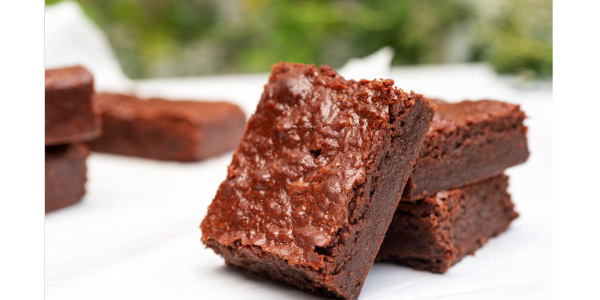

RECEITA - BROWNIE DE CHOCOLATE
INGREDIENTES
- 2 xícaras de achocolatado em pó
- 1 xícara de farinha de trigo
- 1 xícara de açúcar
- 200g de manteiga
- 4 ovos
MODO DE PREPARO
- Em uma tigela coloque os ovos e o açúcar e bata com a ajuda de fouet ou garfo;
- Em seguida adicione a manteiga e o achocolatado em pó;
- Misture tudo e depois adicione a farinha de trigo;
- Mexa a massa até que fique homogênea;
- Despeje a massa em uma forma untada com achocolatado em pó;
- Leve para assar em forno pré-aquecido a 180ºC por 35 minutos.
Voltar